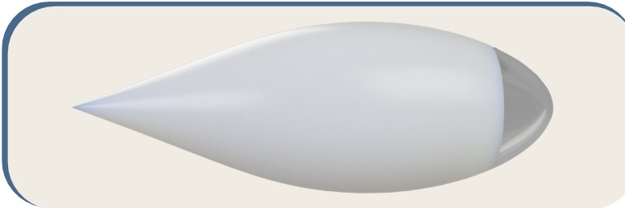
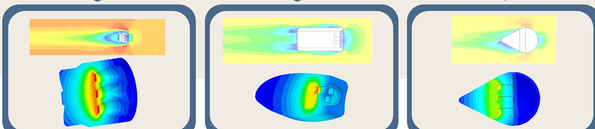
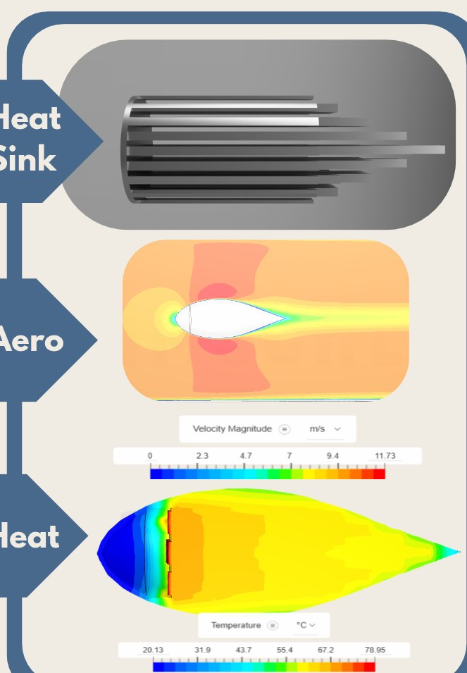

v1 raindrop
The base idea: a raindrop shape, with a tapered back to cut the wake behind the light.
A bike light reshaped with airflow and heat simulation: 85% less drag, and cool enough not to melt its own shell.

The original bike light was a cylinder with flat front and back faces. It trapped air, shed vortices, and ran its LED far too hot.
CFD in SimScale showed high pressure trapped on the flat front and turbulent wake off the flat back. Thermal simulation was worse: the LED area reached 155 °C, far past the 89 °C limit of the ABS housing.
We set out to fix both at once: a shape that cuts through the air, and a heat sink that keeps the LED inside the safe limit.
The base idea: a raindrop shape, with a tapered back to cut the wake behind the light.
The raindrop stretched narrower and longer, closer to an aerofoil, and a finned heat sink added inside.
A much bigger heat sink that fills more of the shell, with a thicker baseplate and more fins.

A blunted nose manages the stagnation pressure at the front, and the long, gradual tail keeps the airflow attached with no noticeable vortices. External pressure stays close to atmospheric, while the inside stays at low pressure, which helps cool the heat sink.
Rectangular fins run to the edge of the shell, 1.5 mm apart, 1.0 × 1.5 mm thick with a 1° taper for airflow and manufacturability, inspired by older CPU heat sinks. A thicker baseplate spreads heat into the fins. Peak temperature dropped to about 79 °C, keeping the LED cool enough not to deform the ABS housing.
